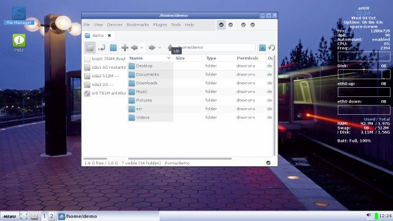

On this page:
First look
[top]

What is this desktop?
This is the SpaceFM Desktop, based around the Linux file system. Its core component is SpaceFM, a powerful graphical file manager.
What can you do with SpaceFM?
Well, manage files of course! But it has many other capabilities that are covered below and in documents listed under Links.
What is the SpaceFM desktop good for?
Its great benefit is to allow you to use icons for any item in the file system with a simple drag-and-drop.
Tell me more.
Everything you want/need to know about SpaceFm is in its manual see link below.
Video
[top]
AntiX 13 - The File Managers Part 2 - SpaceFM by runwiththedolphin
https://www.youtube.com/watch?v=BJN9j8KHRZE